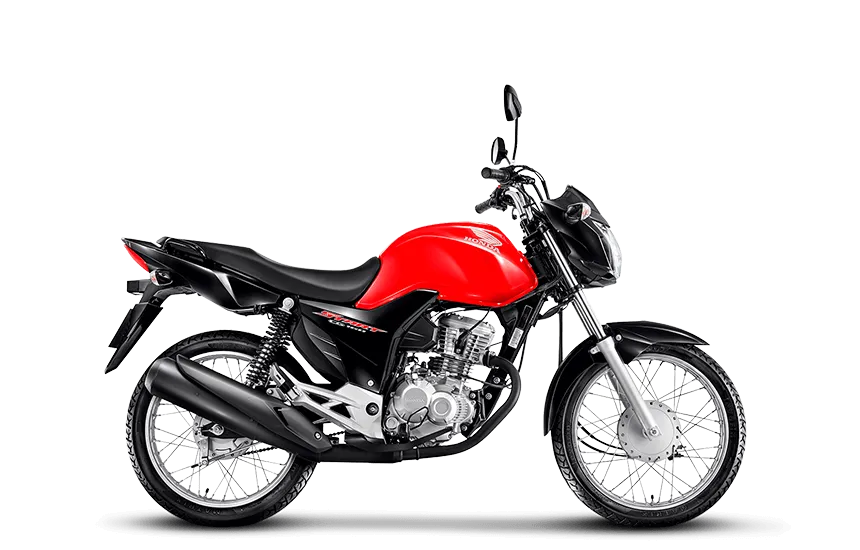
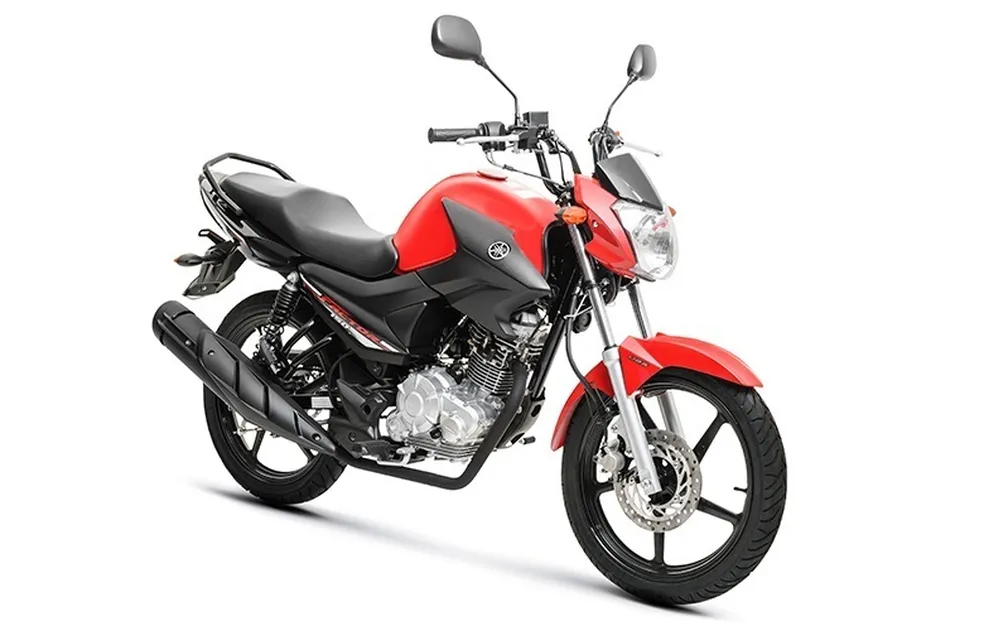

Honda Principais modelos
Yamaha Principais modelos
A mais vendida da honda
Honda CG 160
Em produção há mais de 45 anos, a Honda CG continua sendo a moto mais vendida do Brasil.
Vendida em
quatro versões, da básica Start à mais equipada Titan, a CG 160 é sinônimo de robustez
e economia de
combustível. Seja para se locomover ou para trabalhar, a CG é a queridinha dos motociclistas brasileiros.
A mais vendida da Yamaha
Yamaha Factor 150
Embora não sofra mudanças desde 2018, a Yamaha Factor 150 continua figurando no ranking
das motos mais
vendidas do Brasil. Não por acaso, afinal o modelo tem um bom custo benefício
para quem procura uma moto
robusta e confiável para trabalhar. Contudo, com a entrada em vigor do Promot 5, a Factor 150, assim
como muitos outros modelos, deverá mudar para o próximo ano.